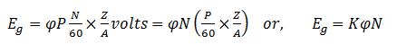
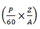
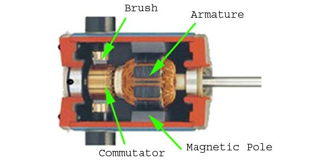
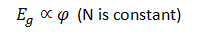
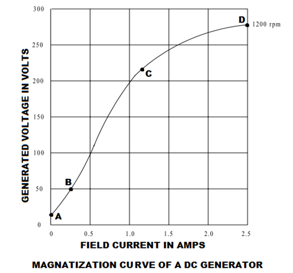

Magnetization Curve
Magnetization curve of a DC generator is that curve which gives the relation between field electric current and the armature terminal voltage on open circuit.
When the DC generator is driven by a prime mover then an emf is induced in the armature. The generated emf in the armature is given by an expression


is constant for a given machine.it is replaced by K in this equation.
Here,
φ is the flux per pole,
P is the no. of poles,
N is the no. of revolution made by armature per minute,
Z is the no. of armature conductors,
A is no. of parallel paths.
Cross - section of DC Generator
Now, from the equation we can clearly see that the generated emf is directly proportional to the product of flux per pole and the speed of the armature.
If the speed is constant, then the generated emf is directly proportional to the flux per pole.

It is obvious that, as the excitation electric current or field electric current (If) increases from its initial value, the flux and hence generated emf is increased with the field current.
If we plot the generated voltage on the Y axis and field electric current on the X axis then the magnetization curve will be as shown in figure below.

Magnetization curve of a DC generator has a great importance because it represents the saturation of the magnetic circuit. For this reason this curve is also called saturation curve.
According to the molecular theory of magnetism the molecules of a magnetic material, which is not magnetized, are not arranged in definite order. When electric current passed through the magnetic material then its molecules are arranged in definite order. Up to a certain value of field electric current the maximum molecules are arranged. In this stage the flux established in the pole increased directly with the field currant and the generated voltage is also increased. Here, in this curve, point B to point C is showing this phenomena and this portion of the magnetization curve is almost a straight line. Above a certain point (point C in this curve) the nu-magnetized molecules become very fewer and it became very difficult to further increase in pole flux.This point is called saturation point. Point C is also known as the knee of the magnetization curve. A small increase in magnetism require very large field electric current above the saturation point. That is why upper portion of the curve (point C to point D) is bend as shown in figure.
Magnetization curve of a DC generator does not start from zero initially. It starts from a value of generated voltage due to residual magnetism.
Residual Magnetism
In ferromagnetic materials, the magnetic power and the generated voltage increase with the increase of the electric current flow through the coils. When electric current is reduced to zero, there is still magnetic power left in those coils core. This phenomena is called residual magnetism. The core of a DC machine is made of ferromagnetic material.
 by
by